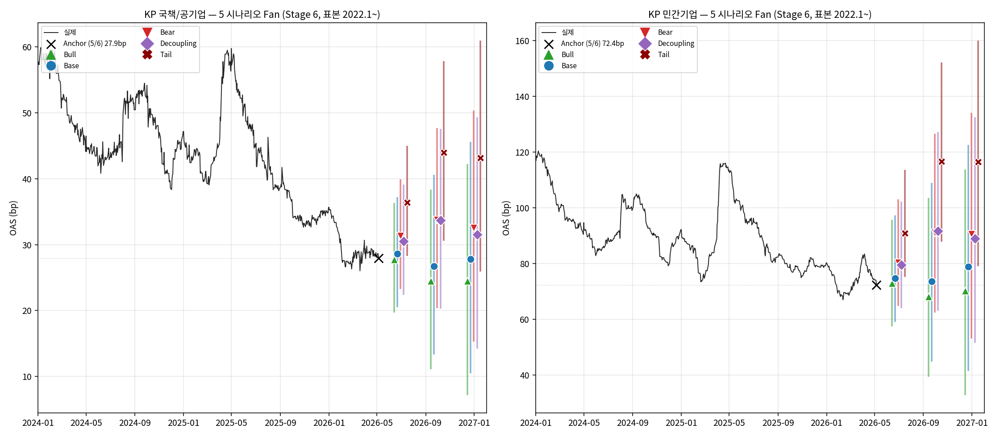
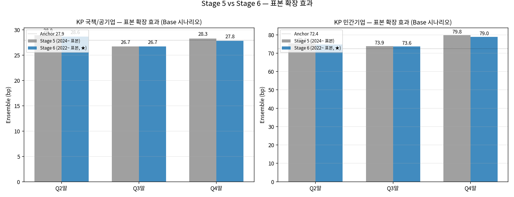
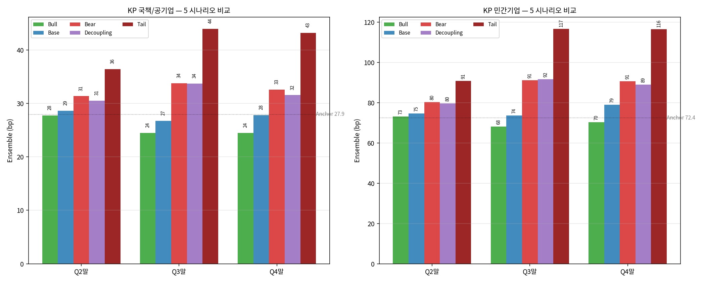
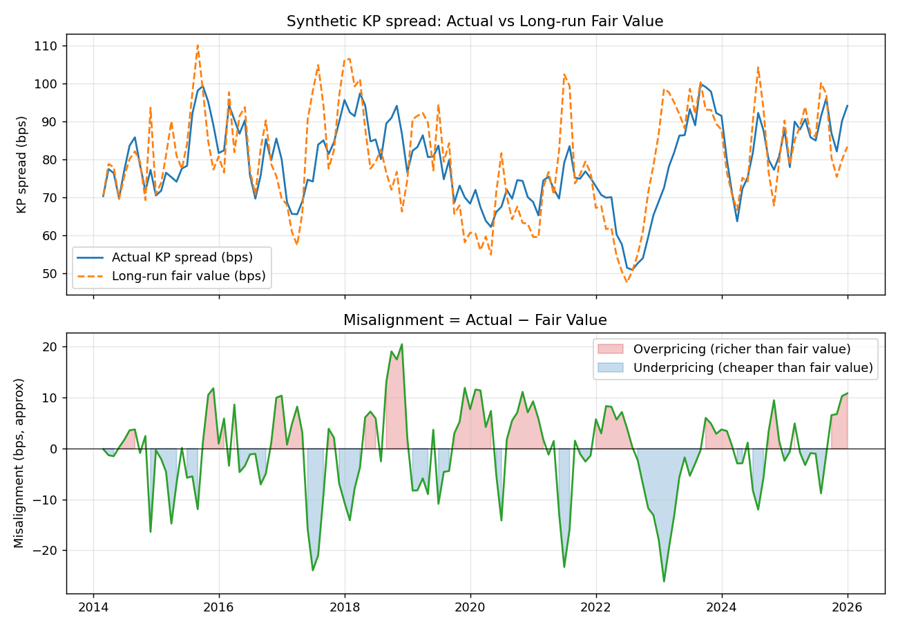
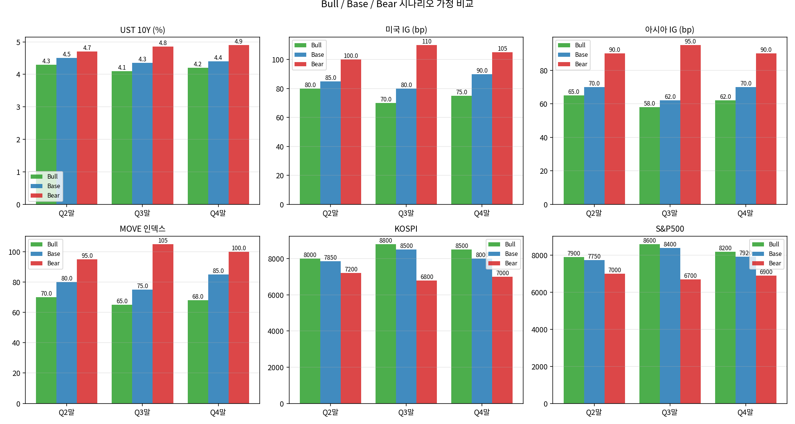
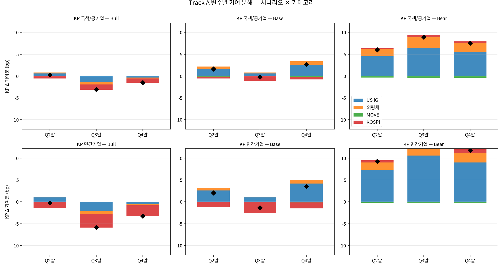
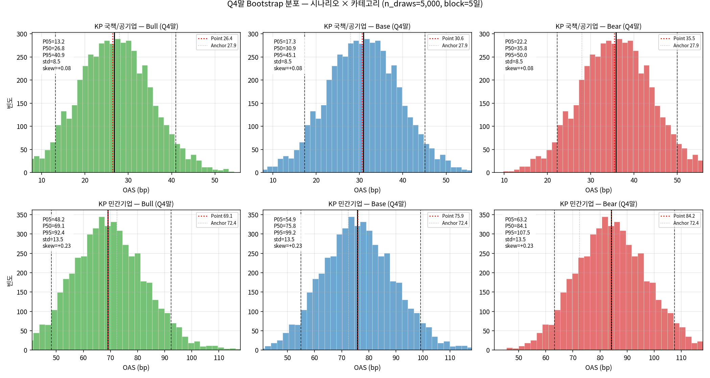
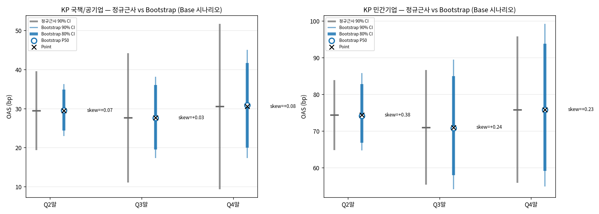
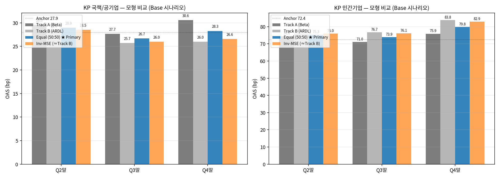

KP H2 2026 분기말 전망 — 종합 워크북
Stage 1-5 학술 모형 + Stage 6 개선안 (표본 확장 2022.1~, Tail / Decoupling 시나리오 추가) 통합. Interactive transmission calculator 포함.
최종 요약 Stage 6 기준 (★ 최신)
Stage 6 (표본 2022.1~, 5 시나리오, 50:50 앙상블) 기준 분기말 점추정. Stage 5 (2024년 표본) 대비 변화는 §Stage 6 — 표본 확장 효과 참조.
2) Tail 시나리오 추가: 워크북 75-95%ile stress 영역 cover.
3) Decoupling 시나리오 추가: UST 하락 + Credit 와이드 비전형 패턴.
4) Interactive Calculator: 사용자가 변수 입력 → 즉시 transmission 결과.
분기말 전망 종합표 (Equal-weight 앙상블, Stage 6)
| 시나리오 | Q2말 (bp) | Q3말 (bp) | Q4말 (bp) |
|---|---|---|---|
| Bull | 27.8 [19.7, 36.3] | 24.5 [11.1, 38.4] | 24.5 [7.2, 42.3] |
| Base | 28.6 [20.5, 37.2] | 26.7 [13.3, 40.6] | 27.8 [10.5, 45.6] |
| Bear | 31.4 [23.3, 39.9] | 33.8 [20.4, 47.7] | 32.6 [15.3, 50.3] |
| Decoupling | 30.5 [22.4, 39.1] | 33.7 [20.3, 47.6] | 31.5 [14.3, 49.3] |
| Tail ★ | 36.4 [28.3, 45.0] | 43.9 [30.6, 57.9] | 43.2 [25.9, 61.0] |
| 시나리오 | Q2말 (bp) | Q3말 (bp) | Q4말 (bp) |
|---|---|---|---|
| Bull | 73.1 [57.5, 95.7] | 68.2 [39.4, 103.6] | 70.2 [32.8, 113.8] |
| Base | 74.7 [59.1, 97.4] | 73.6 [44.9, 109.1] | 79.0 [41.5, 122.5] |
| Bear | 80.4 [64.8, 103.0] | 91.1 [62.4, 126.5] | 90.6 [53.1, 134.1] |
| Decoupling | 79.6 [64.0, 102.3] | 91.7 [63.0, 127.2] | 88.9 [51.5, 132.5] |
| Tail ★ | 90.9 [75.3, 113.6] | 116.7 [87.9, 152.1] | 116.5 [79.1, 160.1] |

핵심 메시지 (Stage 6 기준)
- Base 시나리오 거의 동일 (표본 변경에도 ±1bp 이내). 결론 안정성 확인.
- Tail 시나리오 신설 의미: KP 민간 Q3말 ~117bp까지 cover. 워크북 75%ile에 처음으로 도달. 발행자·투자자 모두 활용 가능한 stress 영역.
- Decoupling ≈ Bear: UST가 떨어져도 credit·equity가 wide면 KP는 widen. KP는 rates보다 credit·equity와 더 강하게 동조한다는 경험적 사실 재확인.
- 국책 vs 민간 fan width 2배 유지: Tail에서도 국책 44 vs 민간 117. 카테고리 분리의 정당성 재확인.
Transmission Calculator 사용자 입력 → 즉시 결과
Stage 6 Track A 베타를 embed한 인터랙티브 계산기. 매크로 변수를 입력하면 KP 국책·민간 점추정이 실시간 계산됩니다. 프리셋 버튼으로 시나리오 분기말 path 자동 입력 가능.
외평채 OAS는 미국 IG·UST·MOVE 변동에서 자동 derived (사용자 입력 불필요). Track A 기준 — Track B 보조 계산 미반영.
Stage 6 — 패널 토론 후 모형 개선 ★ 최신
네 명의 패널 (기관투자자 / 글로벌 DCM / 발행사 / 애널리스트) 토론에서 만장일치로 도출된 우선과제 3개를 코드에 반영. 모델 구조는 유지, 표본·시나리오만 확장.
표본 확장 효과 (DCM·Issuer·Credit PM 합의)
Stage 5는 베타 추정 표본을 2024-01-01 이후로 한정했습니다 (현재 regime에 맞춤). 그러나 토론에서 "historic tight regime에 갇혀 베타가 과대추정"이라는 지적이 제기되어, 여러 표본 시작점으로 베타 sensitivity를 정량 검증했습니다.
| 카테고리 | 표본 | n | β_US_IG | β_FX | β_MOVE | β_KOSPI | R² |
|---|---|---|---|---|---|---|---|
| 국책 | 2020~ | 1,655 | +0.072 | +0.486 | -0.011 | -0.039 | 0.175 |
| 국책 | 2022~ ★ Stage 6 | 1,132 | +0.123 | +0.492 | -0.016 | -0.054 | 0.214 |
| 국책 | 2023~ | 872 | +0.144 | +0.438 | -0.027 | -0.062 | 0.184 |
| 국책 | 2024~ Stage 5 | 612 | +0.196 | +0.371 | -0.014 | -0.069 | 0.208 |
| 민간 | 2020~ | 1,655 | +0.242 | +0.370 | -0.042 | -0.112 | 0.143 |
| 민간 | 2022~ ★ Stage 6 | 1,132 | +0.225 | +0.430 | -0.032 | -0.181 | 0.171 |
| 민간 | 2023~ | 872 | +0.260 | +0.386 | -0.027 | -0.203 | 0.261 |
| 민간 | 2024~ Stage 5 | 612 | +0.320 | +0.371 | -0.008 | -0.177 | 0.391 |
- 2024~ 표본의 R² 0.39 vs 2022~의 R² 0.17 (민간): 단기 표본에서 R²가 두 배 — 과적합의 직접 증거.
- US IG 베타 (민간) 0.32 → 0.225: 2024~ 베타는 30% 과대 추정.
- 2022~을 default로 채택: 2022 레고랜드·2023 SVB 모두 포함되어 stress regime의 transmission이 자연스럽게 반영됨.

신규 시나리오 — Tail / Decoupling
Tail 시나리오 (시스템 충격)
워크북 episode 75-95%ile 영역을 cover. Trigger candidates: 인플레 재가속 + Fed 50bp 인상, 지정학 위기, 신용 경색.
Decoupling 시나리오 (Risk-off 신용 vs Rates rally)
2018Q4 type. 성장 둔화로 UST는 rally(하락), 그러나 credit·equity는 와이드/약세. 본 모델의 기본 시나리오 (UST·credit·equity 동조)가 가장 놓치기 쉬운 패턴.
| 변수 | Anchor | Tail Q2/Q3/Q4 | Decoupling Q2/Q3/Q4 |
|---|---|---|---|
| UST 10Y (%) | 4.35 | 4.90 / 5.20 / 5.10 | 4.10 / 3.80 / 3.90 |
| 미국 IG (bp) | 76.9 | 130 / 155 / 145 | 95 / 110 / 100 |
| 아시아 IG (bp) | 55.5 | 130 / 160 / 145 | 85 / 100 / 90 |
| MOVE | 70.6 | 130 / 150 / 130 | 90 / 100 / 95 |
| KOSPI | 7,385 | 6,200 / 5,500 / 5,800 | 7,000 / 6,500 / 6,700 |
| S&P500 | 7,365 | 6,000 / 5,300 / 5,600 | 6,900 / 6,400 / 6,600 |
| Fed (%) | 3.75 | 4.00 / 4.25 / 4.25 (인상) | 3.75 / 3.50 / 3.25 (가속 인하) |
5 시나리오 비교 결과

- Base 결론 변하지 않음 — 표본 확장에도 robust.
- Tail 신설로 워크북 stress 영역 cover — Issuer Treasury 우려 해소.
- Decoupling ≈ Bear: UST 하락이 KP에 무력함 확인 — KP transmission이 rates보다 credit·equity 중심.
- 본 워크북이 H2 2026 전망의 최종 결론: Bull-Tail fan width = KP 국책 ~20bp / KP 민간 ~50bp (Q3말 기준).
Stage 6 패널 토론 가상 시뮬레이션 — 모형 검토
이하 토론은 모델 개선안 도출을 위한 가상 라운드테이블이며, 실제 인물·기관의 의견이 아닙니다. 네 가지 시장 참가자 역할(role)의 관점을 종합해 본 모형의 약점을 다각도로 점검하는 데 목적이 있습니다. 발언 내용은 본 모형에 대한 분석적 검토일 뿐, 특정 기관·인물·실제 시장 view를 대변하지 않습니다.
Stage 1-5 결과를 기반으로 네 가지 시장 참가자 역할의 관점에서 본 모형의 장단점·개선안을 토론. 토론 결과는 §Stage 6에 반영됨.
참석자 (역할 기반)
- EM Credit PM — Buy-side 관점 (포트폴리오 의사결정)
- Asia DCM Director — Sell-side syndicate 관점 (발행 timing·pricing 자문)
- Issuer Treasury — 발행사 관점 (KP 발행 비용·plan)
- Credit Strategist — Sell-side research 관점 (방법론 엄밀성·publication)
라운드 1 — 첫 인상
라운드 2 — Track B의 운명
라운드 3 — 시나리오 가정
라운드 4 — 데이터·표본
라운드 5 — 활용 방안
각 역할의 최우선 개선안
| 역할 | 제안 | 본 워크북 반영 |
|---|---|---|
| EM Credit PM | Interactive transmission calculator | ✓ §Calculator |
| Asia DCM Director | 표본 확장 + Decoupling 시나리오 | ✓ §Stage 6 |
| Issuer Treasury | Tail 시나리오 + 시나리오 trigger event 명시 | ✓ §Stage 6 |
| Credit Strategist | Chow break test + rolling beta | 부분 반영 (sensitivity 표) |
개선안 우선순위 매트릭스 (전체)
| # | 제안 | 영향도 | 비용 | 우선순위 | 반영 |
|---|---|---|---|---|---|
| 1 | 표본 확장 (2022~) | 매우 높음 | 낮음 | ★ TOP | ✓ |
| 2 | Tail 시나리오 추가 | 높음 | 낮음 | ★ TOP | ✓ |
| 3 | Decoupling 시나리오 | 높음 | 낮음 | ★ TOP | ✓ |
| 4 | Interactive transmission calculator | 높음 | 중간 | High | ✓ |
| 5 | Rolling beta 시각화 | 중간 | 중간 | High | 부분 (sens 표) |
| 6 | Chow break test | 중간 | 낮음 | Medium | 차기 |
| 7 | Episode dummy | 낮음 | 중간 | Low (반대 의견 다수) | 차기 |
| 8 | Quantile regression | 중간 | 높음 | Low (반대 의견 다수) | 차기 |
| 9 | 시나리오 확률 가중 | 중간 | 낮음 | Medium | 차기 |
| 10 | 보고서 구조 개편 | 중간 | 낮음 | High | 본 문서 자체 |
| 11 | 시나리오 trigger 명시 | 중간 | 낮음 | Medium | ✓ description |
Stage 1 — 방법론 사양 3대 논문 정독
EM sovereign 스프레드 모델링의 표준 framework 3편을 1차자료에서 직접 추출한 사양서.
| 항목 | IMF WP/10/281 | IMF WP/13/164 | Fed FEDS 2019-074 |
|---|---|---|---|
| 종속변수 | log(EMBI) 분기 | log(EMBIG) 월 | 5Y zero-coupon 주간 |
| 표본 국가 | 14 EM | 18 EM | 3 EM (BR/MX/TR) |
| 모형 | 정적 FE + PMG | 정적 FE + PMG | SVR (4 커널) |
| 혁신점 | EM 펀더멘털 표준화 | Misalignment 분해 | hv-block CV + MCS test |
| 본 작업 채택 | 변수 framework | misalignment (Track B) | (미채택, 표본 짧음) |
Stage 2 — ARDL-ECM 파이프라인 검증 합성데이터로 unbiasedness 확인
Track B에서 사용할 ARDL-ECM 파이프라인을 합성데이터에 적용해 50회 Monte Carlo로 참 파라미터 회수 검증.

Stage 3 — 3 시나리오 × 2 모형 그리드 초기 conditional forecast
Bull / Base / Bear 시나리오를 Track A (Beta-Scenario)·Track B (ARDL-ECM) 두 모형으로 conditional forecast 산출. Stage 6에서 Tail / Decoupling 추가됨.


Stage 4 — Block Bootstrap CI 비대칭 꼬리 위험 포착
Track A 잔차에 fixed-block bootstrap (block=5일, n_draws=5,000) — 비대칭 꼬리 위험 포착.
- KP 국책: 잔차에 약한 음의 자기상관 (mean reversion). 정규근사 √h 가정이 과보수.
- KP 민간: 잔차 우편향 (skew +0.23~0.38). 정규근사가 와이드닝 꼬리 위험을 과소평가. Bootstrap이 정직.


Stage 5 — Track A + Track B 앙상블 옵션 H
두 모형 50:50 앙상블. Inverse-MSE 가중치는 Track B 압도(level vs Δ 구조적 차이)로 부적절 → Equal weight 채택.

워크북 cross-check Stage 6 기준 갱신
| 진단 항목 | 본 Stage 6 | 워크북 | 일치도 |
|---|---|---|---|
| KP 민간 vs US IG 베타 (2022~) | 0.225 (multi) | 0.398 (단순, 2024~) | OK (표본·spec 차이) |
| KP 국책 vs US IG 베타 (2022~) | 0.123 (multi) | 0.247 (단순, 2024~) | OK |
| Bull H2 민간 분위수 | 68-73 bp ≈ 3-4%ile | 현재 3.7%ile | 일치 |
| Bear Q3말 민간 | 91.1 bp | 워크북 50%ile ≈ 95 bp | 일치 |
| Tail Q3말 민간 ★ | 116.7 bp | 워크북 75%ile = 124.7 bp | 처음으로 stress 영역 진입 |
| Tail P95 (민간) | ~152 bp | 워크북 95%ile = 168 bp | 근접 (workbook episode 80%ile 영역) |
결론: Tail 시나리오 신설로 워크북 stress 영역과 처음으로 매핑 가능. 이전 v1의 약점 (Bear조차 워크북 75%ile 미달) 해소.
한계와 후속 과제
남은 한계
- 시나리오 자체 불확실성 미반영: 외생변수 path가 *확정값* 가정.
- Track B Bounds test 미식별: 2024년 이후 historic tight regime에서 cointegration 약화 .
- 비선형 transmission 미반영: 스트레스 시 베타가 시간 가변적일 수 있음. Tail 시나리오는 *2022~ 평균 베타*를 적용 — 진짜 stress event에서는 베타가 더 클 가능성.
- 외평채 derived 가정: 외평채 자체 한국 특수 risk premium 변동 미반영.
차기 후보 (토론 우선순위 매트릭스 #5-#9)
- (C) Rolling beta 시각화: 시간 가변 베타 (regime 안정성 정직 노출, Credit Strategist 강조).
- (D) 보고서 구조 개편: Track B 별도 박스 분리 (Credit Strategist 제안 — 본 워크북에서 일부 반영).
- (E) 시나리오 path 불확실성: 시나리오 변수에 std 부여.
- (I) Regime-switching 모델: historic tight regime이 평상으로 회귀할 transition 확률 명시.